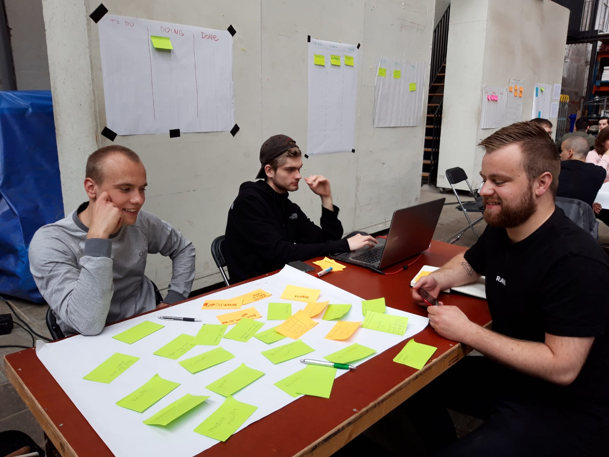
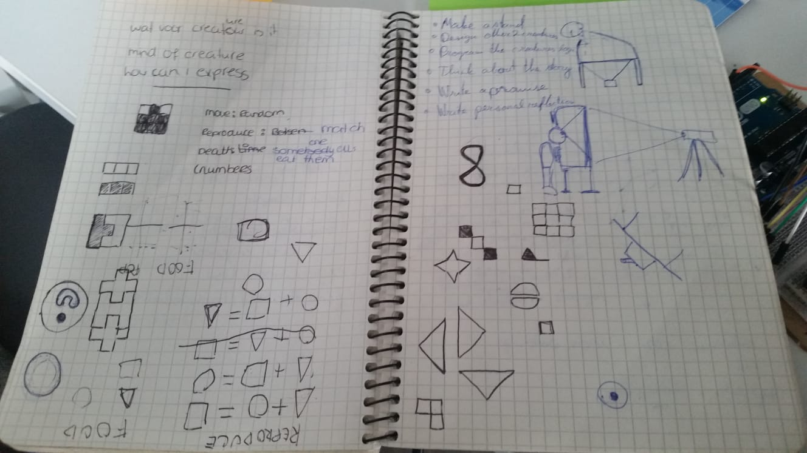
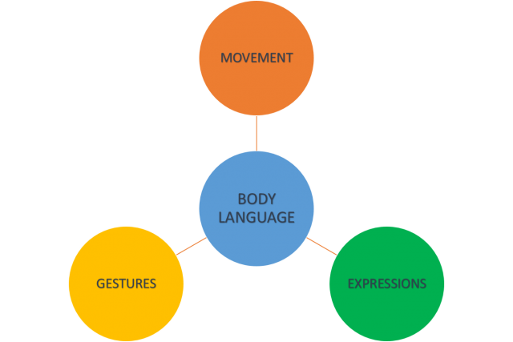
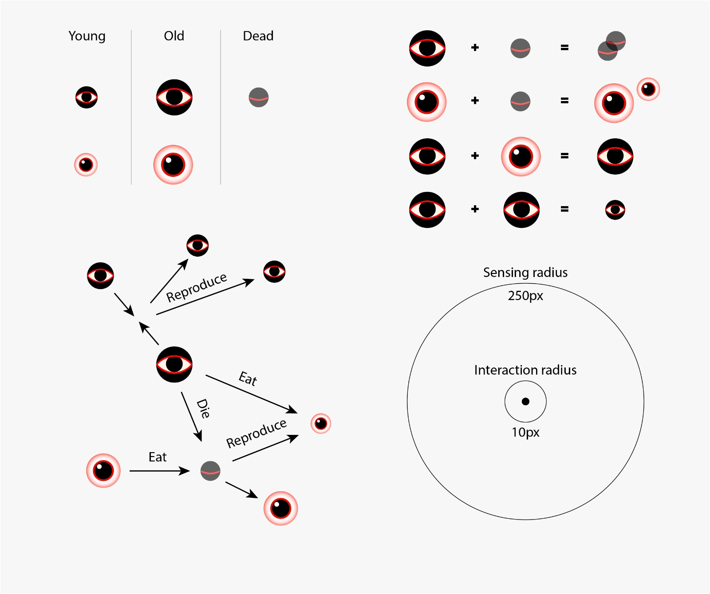
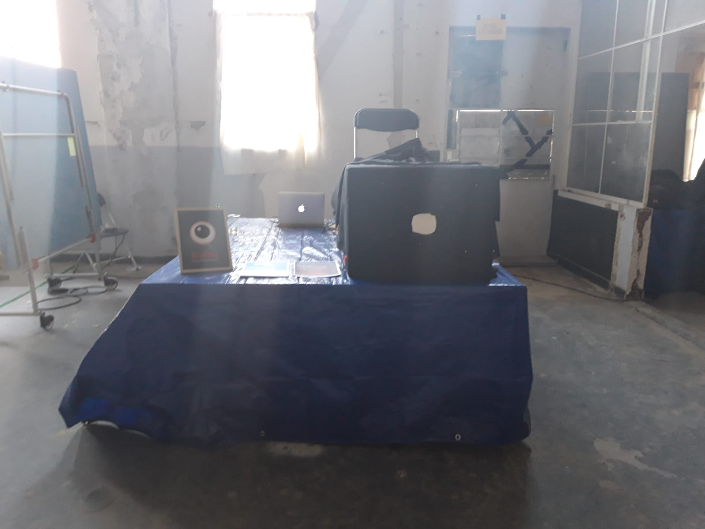
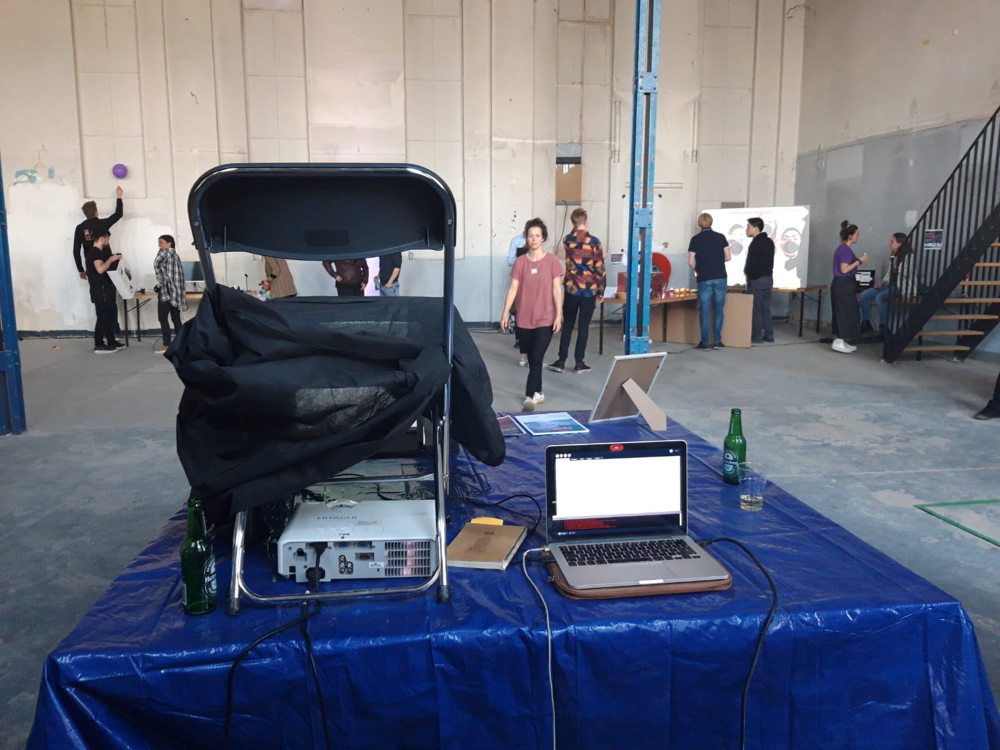

LAB
Proces
Aanleiding Laatste blok van het jaar, het gaat allemaal even anders dan normaal. Als eerst hebben wij zes weken normale lesweken, vervolgens zijn wij de laatste twee weken van het blok, naar een speciale locatie toe te gaan voor de HCI lab weken. Wij hadden de keuze om uit vier onderwerpen te kiezen: - Wearebles - Playful Interaction - Artificial creatures - Virtual Reality and Augmented Reality Het doel van deze twee weken is dat er een interactief systeem wordt gemaakt. Dit wordt gezamenlijk gedaan met een projectgroep. Aan het einde van deze twee weken wordt er een expositie gehouden. Hierbij worden velen verschillende mensen uit het werkveld voor uitgenodigd, daarnaast hebben wij ook de mogelijkheid om onze familie en vrienden uit te nodigen. In het onderstaande wordt er dagelijks een samenvatting gemaakt, met de weergave
Maandag
Vandaag was onze eerste HCI lab dag. Als eerst werd iedereen netjes ontvangen door onze docent Chris Heydra (Coördinator van het vak). Bij binnenkomst was het direct duidelijk het om een grote bouwplaats ging. Meer dan 100 leerlingen zijn bij een gekomen om aan verschillende projecten te zittn. De studenten zijn van twee verschillende studies: CMD (Communication and Multimedia Design) en UX (User Experience Design). De studenten van User Experience Design zijn studenten vanuit de hele wereld, vandaar dat Engels de voertaal zal zijn. Minimaal zitten er twee internationale studenten in een groep. Het was erg leuk om te zien, hoeveel studenten bij elkaar zijn gekomen om aan verschillende project te zitten. Allemaal hebben één ding gemeenschappelijk. Een super tof product in elkaar zetten! Iedere groep gaat een product maken op de laatste dag zal er een expositie zijn. Hier zijn verschillende mensen voor uitgenodigd vanuit het werkveld, familie en vrienden. Nadat iedereen zich had verzameld, heeft Chris Heydra (Coördinator van het vak) de instructies van de aankomende twee weken gegeven. Het ging over de huisregels en wat ons te wachten staat. Van te voren hadden wij de mogelijk om een onderwerp te kiezen. Hierbij moest je ook je motivatie toevoegen. De volgorde van mijn keuzes waren: 1) Virtual Reality and Augmented Reality 2) Playful Interfaces 3) Wearables 4) Artificial Creatures Daarna werden de groepen en de onderwerpen bekend gemaakt. In mijn groep zitten vier personen twee studenten van CMD en twee studenten van UX. Martin (UX Student), Karolis (UX student) en Tim (CMD Student) zitten bij mij in de groep. Mijn projectgroep kreeg het onderwerp ‘Artificial Creatures’. Als eerst werd er aangeraden om een overzichtelijk agenda te maken. Dit is zowel handig voor de studenten als docenten. Als eerst hadden wij ingepland om een brainstormsessie te houden over het onderwerp Artificial Creatures. Artificial Creatures is een onderwerp wat erg breed kan zijn, dus wij hebben genoeg keuze. Om deze keuze gemakkelijker te maken hebben wij onze ideeën bij elkaar opgeschreven wat ons het meest interessant leek en wat bij ons thema paste. Allemaal zijn we erg enthousiast begonnen met thema’s en ideeën op te schrijven. We merkte allen dat wij erg gemotiveerd waren en waren het allemaal over eens dat we een leuk product willen ontwerpen waar wij trots op kunnen zijn en vervolgens op ons portfolio kunnen zetten. Zoals eerder aangegeven hebben wij veel verschillende ideeën, vervolgens zijn wij deze ideeën gaan klusteren.  Eerste brainstormsessieDinsdag
Als eerst zijn wij begonnen met een stand up. Vervolgens zijn wij verder gegaan met de ideeën, wat we de voorgaande dag hadden bedacht. De ideeen hebben we vervolgens geprobeerd om samen te voegen en te visualiseren. Allen hebben wij hele verschillende ideeën. Vervolgens kwam de eerste spreker Vincent Lindeboom (Creativie produceer), heeft voornamelijk gesproken over Radio Radio. Helaas moest ik midden in de presentatie weggaan, omdat ik mijn toets Nederlands had. Mijn klasgenoten hebben vervolgens besproken met de studentenassisten en die heeft hen geholopen door meer een richting geven.
Woensdag
Vandaag zijn wij direct begonnen met een stand up, wij kregen hier maximaal 20 minuten voor. Hierbij hebben mijn projectgenoten ons toegelicht wat zij op dinsdag hadden gedaan. Vervolgens hebben wij besproken wat we de aankomende dag gingen doen. Na de stand up kregen wij een presentatie van Dr. ir D.J. Broekens. Hij heeft een presentatie gegeven over Robotics and emotions. Het onderwerp vond ik direct interessant en wilde daar graag meer over weten. Dit heeft mij vervolgens geinspireerd om de emoties van de mens te bestuderen. In details ben ik gaan kijken naar het lichaamstaal van de mens. Door te kijken naar het gedrag van mensen, wilde wij voornamelijk inspiratie op doen. Lichaamstaal heeft herkenbare patronen. We wilde meer inzicht hebben over de patronen, omdat wij dit wellicht kunnen toepassen voor onze creatures. We wilde voornamelijk creatures creëren, die er anders uitzagen. Anders dat het vreemd was, dat zodat je merkte dat het om een andere wereld gaat. Toch vonden wij het belangrijk dat de creatures herkenbaar waren voor de mens, dat de mens zich kan relateren aan de creature op een bepaalde manier. We hebben veel verschillende ideeën geprobeerd: monsters, vormen, dieren, iconen en verschillende soorten lichaamsdelen. Daarnaast hebben we voornamelijk veel desk research gedaan over artificial creatures, wat voor doelen haalbaaar waren. We moesten ook een belofte geven. Wij hadden al veel verschillende ideeen, maar toch vonden we het lastig om te kiezen. Omdat we nog niet helemaal ons concept concreet uitgedacht hadden. We wisten wel voornamelijk hoofdlijnen. En dat was vooral dat we de gebruiker een vreemd gevoel wilde geven. Vandaar dat de belofte was: We promise a new level of weirdness.
Donderdag
Vandaag zijn we zoals gewoonlijk begonnen met de stand up. De stand up duurde ditmaal 15 minuten. Elke dag wordt de stand up korter, zodat wij leren om snel goed te communiceren in een groep. Het is belangrijk om concreet te communiceren: - Wat het doel is voor de dag; - Waar is er gister aan gewerkt; - Waar loop je tegen aan. Vandaag was de spreker Teun Verkerk aanwezig en heeft gesproken over verschillende projecten. Voornamelijk heeft die gesproken over zijn creatures. Ik vond het een interessante presentatie. Dit omdat hij voornamelijk aangaf dat hij niet begonnen was met het doel van de creatures. Hij heeft velen voorbeelden gegeven, hij is voornamelijk ook in het buitenland geweest. Overal reageerde ze anders op de creatures. Hij heeft hierbij ook aangegeven dat hij dit samen met een groep heeft gemaakt. Vervolgens hebben ze een prijs gewonnen, en daarna mochten zij in het buitenland de creatures promoten. De creatures zien er bijzonder uit en maken een speciaal geluid. Er zit geen bepaalde ritme in de creatures, waardoor elk moment van de dag een geluid kunnen maken. Daarna heb ik de lijst gemaakt voor de benodigheden en de requierments.
Vrijdag
Vandaag zijn we zoals gewoonlijk begonnen met de stand up. De stand up duurde ditmaal 12 minuten. Elke dag wordt de stand up korter, zodat wij leren om snel goed te communiceren in een groep. Het is belangrijk om concreet te communiceren. Vervolgens hebben we een presentatie gehad van Marcello Gómez Maureira dit ging over Playful interaction. Hij heeft een aantal dingen verteld van zijn eigen projecten daarnaast werkt die bij de universiteit Leiden en is die zelf ook een student. Hij heeft het voornamelijk gehad, wat voor elementen belangrijk zijn in een spel. Wat leuk was bij zijn presentatie, is dat hij interactie had met de studenten. Hij vroeg ons velen verschillende vragen, waarvan wij de antwoorden moesten zeggen. Als voorbeeld had hij een game meegenomen, waar velen elementen in zaten. Het bijzore was, dat de gebruiker bijvoorbeeld niet door deuren hoefte heen te lopen, maar dit kon ook gewoon door ramen. Naast dat hij over het onderwerp Playful Interaction heeft gesproken, heeft hij het gehad over Master studie Media Technology. Het klonk super interessant. Het klonk als een uitbreiding van CMD, maar met meer aspecten van kunst. We moesten aangeven waar wij wilde staan bij de expo.
Dinsdag
Dinsdag weer nieuwe frisse start van de week. Bij de stand up, was al te merken dat iedereen toch nog dingen had bedacht voor het project. Ook ik had er over nagedacht, hoe en wat we konden doen. Toch vond ik dat we bepaalde beslissingen toch moesten maken. Ik heb een lijst gemaakt, met de onderwerpen waar we een keuze over moesten maken. Vervolgens hierover gediscuseerd met mijn projectgenoten. We gingen voornamelijk na denken hoe we de sfeer voor de gebruiker het beste konde maken. Een donkere kamer, wel of niet een doos. Een beamer, groot of toch klein afbeelden. Daarnaast moesten we beginnen te kijken welke logica onze creatures gaan toepassen. Dagelijks probeer ik wel foto's en video's te maken, om een goed overzicht te creeeren voor de video later. Daarnaast heb ik een story gemaakt voor ons concept. Het is uiteindelijk een goede story geworden, echter hebben we niet alle onderdelen hier uit gebruikt.
Woensdag
Vandaag zijn we verder gegaan met de logica van de creatures. Het onderdeel programmeren doe ik niet. Toch heb ik mij er in willen verdiepen, zodat ik goed weet hoe alles functioneert. Mijn projectgenoot heeft mij verteld hoe de code werkt. Hiervan heb ik het meeste begrepen. Helaas liep hij vast bij een onderdeel, ik heb hem hierbij geprobeerd te helpen. Helaas is dat niet volledig gelukt. Samen met mijn projectgenoot hebben we de doos gemaakt waar in de creatures komen. We proberen zo veel mogelijk, dat het een eigen wereld wordt. Ons concept goed beschreven en waar wij voorstaan. Vervolgens naar de Gamma geweest om voor nieuwe producten te kijken.
Donderdag
Donderdag zat de stress er goed in bij iedereen, vooral omdat we allemaal goed willen preseteren. De doos is niet goed in elkaar gezet. Het is nog steeds niet duidelijk hoe we het gaan neerzetten. Daarnaas toch nog advies gevraagd aan de lerares, ze heeft nog een aantal voorbeelden gegeven. Dit vervolgens voorgesteld aan ons groep. Vandaag moesten we alles bij elkaar ruimen. Jammer genoeg stonden we niet op de plek waar we hadden aangegeven. Toch gaan we er iets goeds van maken. We waren van plan om alles zo donker mogelijk te maken, helaas was het nu niet mogelijk. Daarnaast heb ik mij ingelezen hoe je het beste een button kan maken op een product.
Vrijdag
Vandaag de laatste dag, we moesten nog een aantal dingen doen. We wilde de kijkers een beetje voorbereiden, wat ze eventueel konden verwachten. Vandaar dat ik een poster had gemaakt. Ik heb hiervoor verschillende versies gemaakt. Daarnaast heb ik verschillende visueels gemaakt voor de buttons. Daarnaast zijn we gaan nadenken hoe we het beste de opstelling konden maken. Ik heb mijn projectgenoten, zoveel mogelijk ondersteund waar ik kon.
Expositie
De expositie was onzettend leuk! Aan het begin merkte ik dat het lastig vond om het lastig uit te leggen. Constant werd ik er beter in. En merkte ik dat ik het steeds leuker vond. Ik merkte dat sommige mensen het ontzettend leuk vonden en de andere het neutraal. Het leukste vond ik als kinderen het leuk vonden en het vooral begrepen.
Het leukste moment vond ik toen ik het aan een mevrouw ging uitleggen. Als eerst zij ze dat ze niet wilde, omdat ze niet gewend was om te gamen. Toch heb ik mjn verhaal gedaan. toen durfte ze het toch aan. Toen kon ze niet meer stoppen met lachen. En ik merkte dat mijn projectgenoot en ik daaar super blij van werden. Omdat het toch een goed gevoel heeft gegeven bij mensen.
 EYEPOOL Proces
EYEPOOL Proces
Product
EYEPOOL Introductie Als onderwerp is er gekozen voor Artificial Creatures. Sommige projectgenoten hadden gekozen voor het onderwerp Playful Interaction. Dit was voor ons een kans om gedeeltelijke combinatie te maken. Het hoofonderwerp was: artificial creatures. Een van onze hoofdoelen was, om een gehele andere wereld te maken. Waar 'de mens' invloed over heeft.We wilde het zo gek en vreemd mogelijk maken. Vandaar dat wij ook kozen hebben voor de belofte: we promise you another level of weirdness. Product Ons onderwerp is artificial creatures. Wij wilde vanaf het begin al een 'andere wereld creeeren'. Soort van een ander dimensie. In deze wereld zijn verschillende creatures met verschillende leeftijden (jong, oud) ze zijn levend of. De creatures reproduceren, eten, of ze gaan dood. Ons voornamelijk doel was, dat zij een eigen systeem hebben. En dat de gebruiker hier macht over heeft. Het product is een doos, waar je de andere dimensie ziet. Door middel van een kijkgat. De gebruiker heeft invloed omdat creatures kan creeeren. De creatures kunnen vervolgens elkaar opeten en ze kunnen reproduceren. Wanneer de zwarte creatures tegen elkaar aankomen dan reproduceren zij een nieuw creature (eye). Wanneer de zwarte en de witte creatures tegen elkaar aankomen dan eet de zwarte creature de witte op. Wanneer de zwarte creature uiteindelijk dood gaat, is dit goed nieuws voor de witte creatures. De witte creatures kunnen de corpussen eten van de zwarte creatures.
 Beschrijvijng proces  Beschrijvijng proces  Beschrijvijng proces